VIDEO
STILL FRAMES

 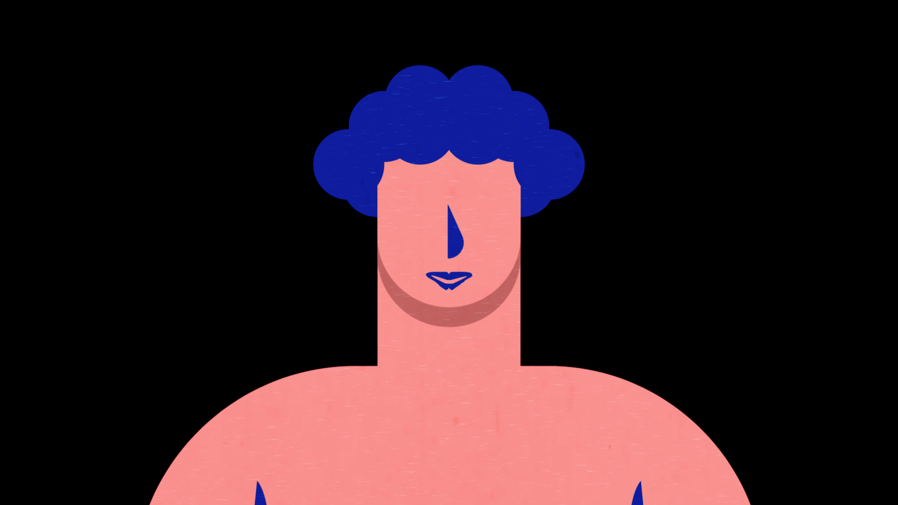
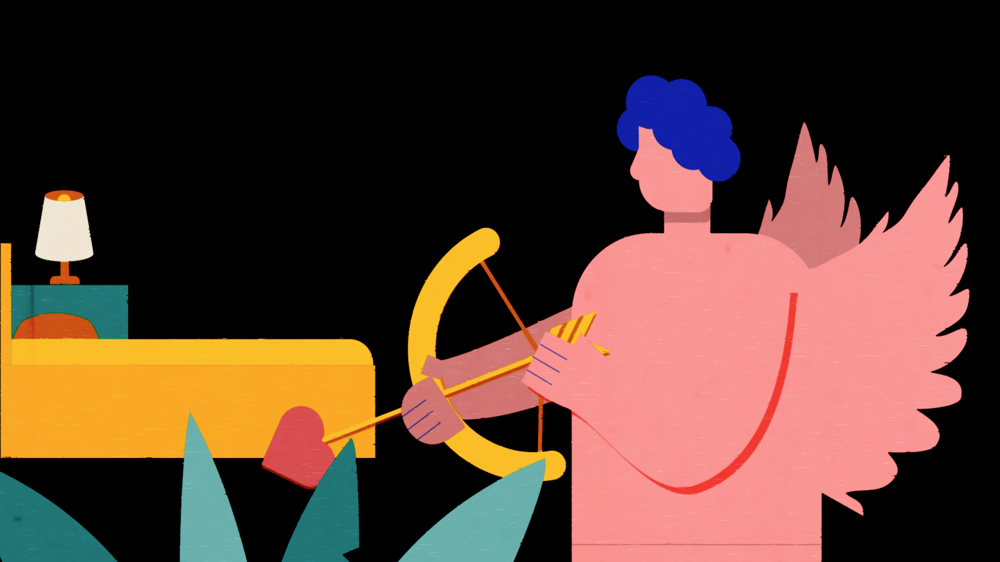
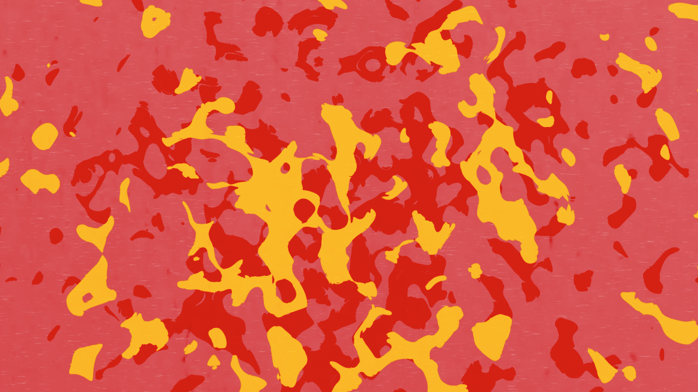
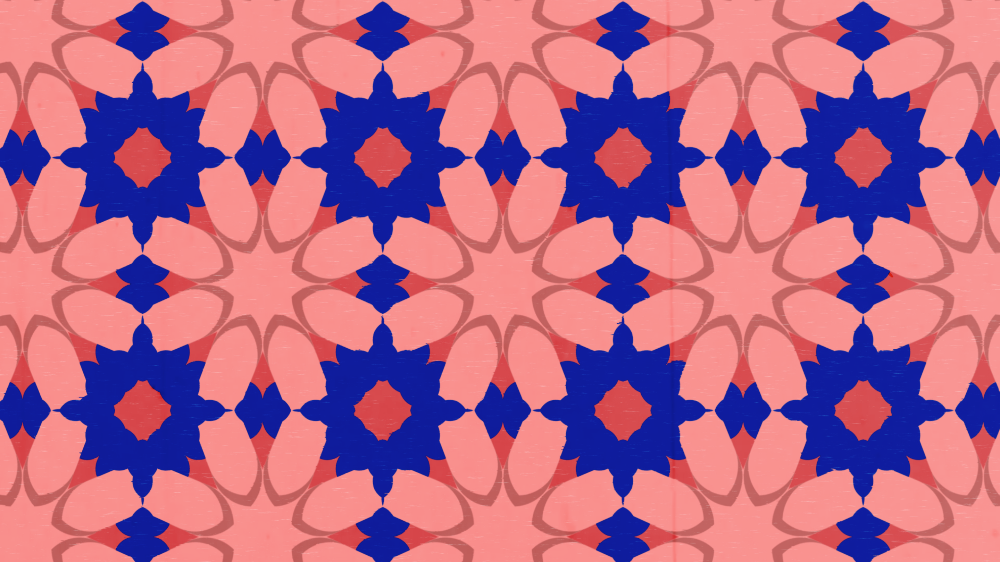
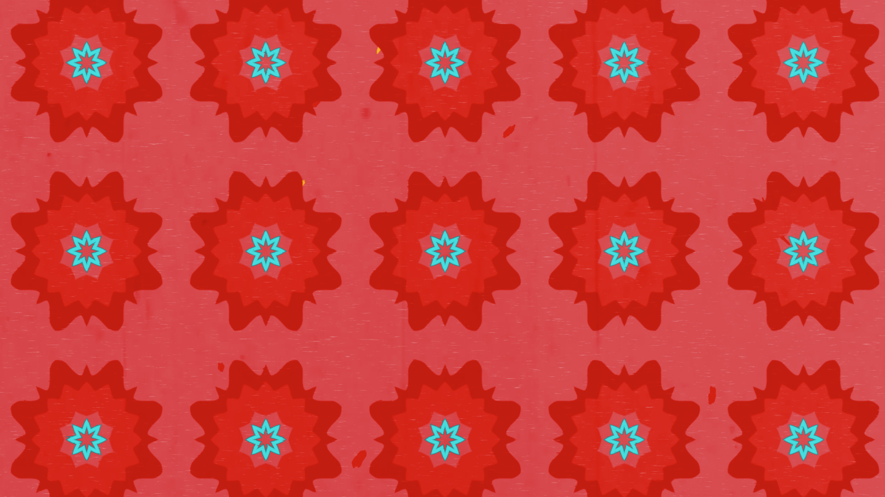
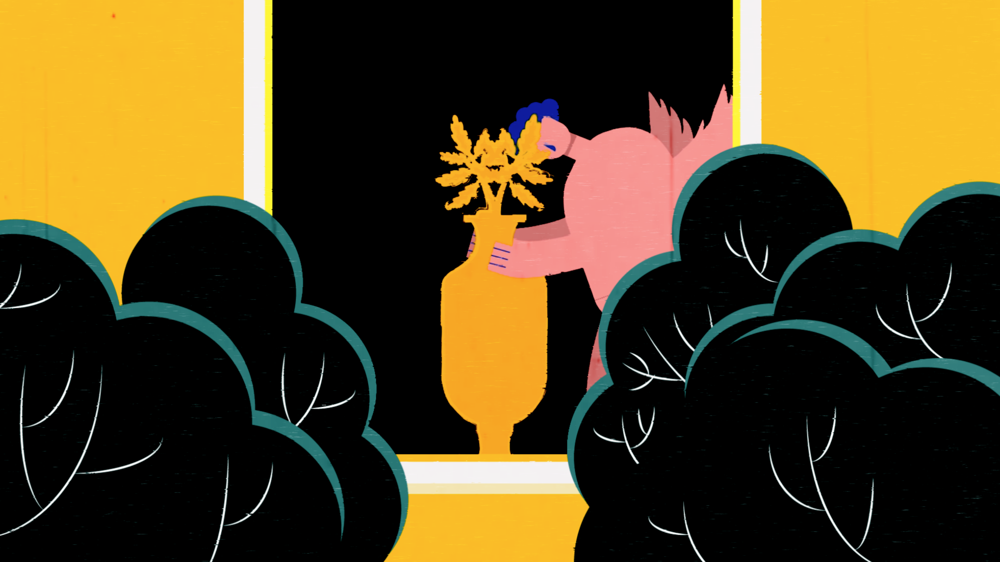
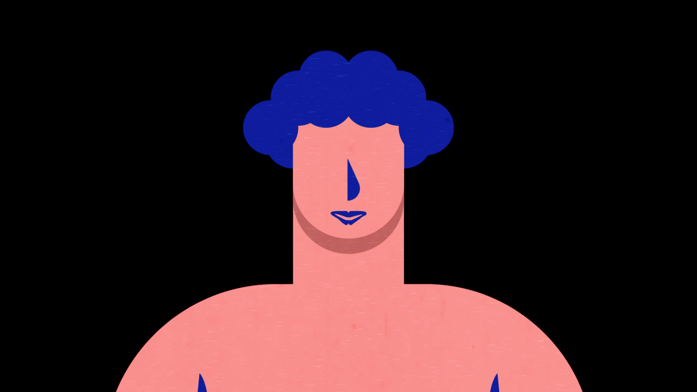
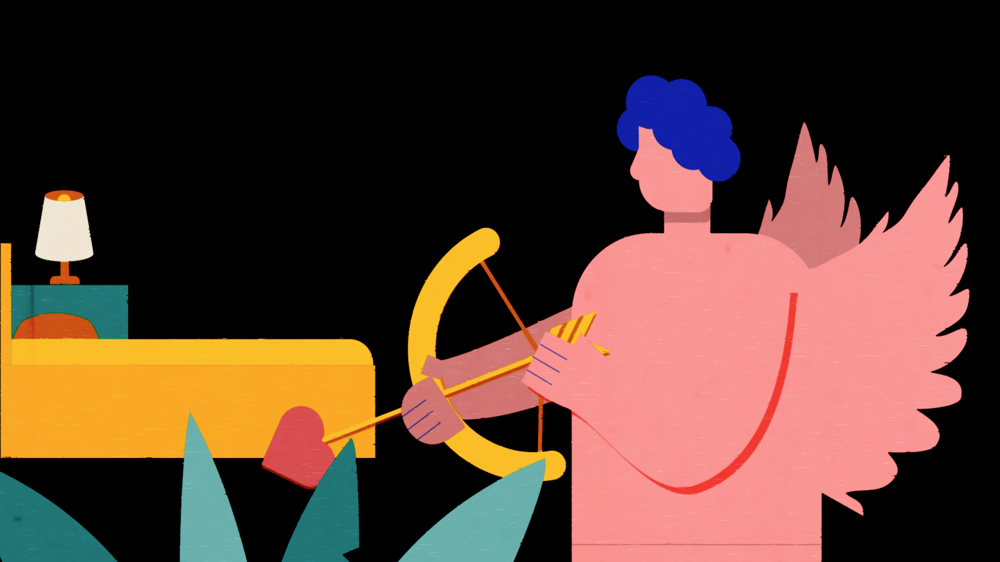
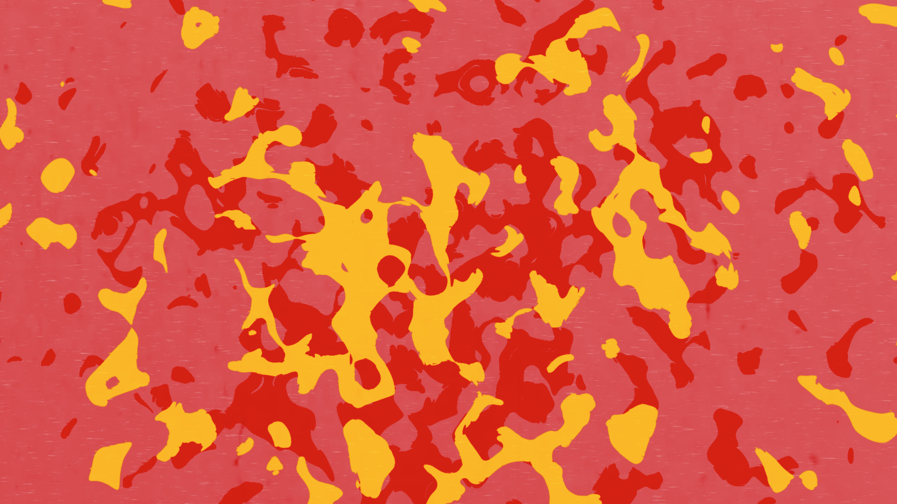
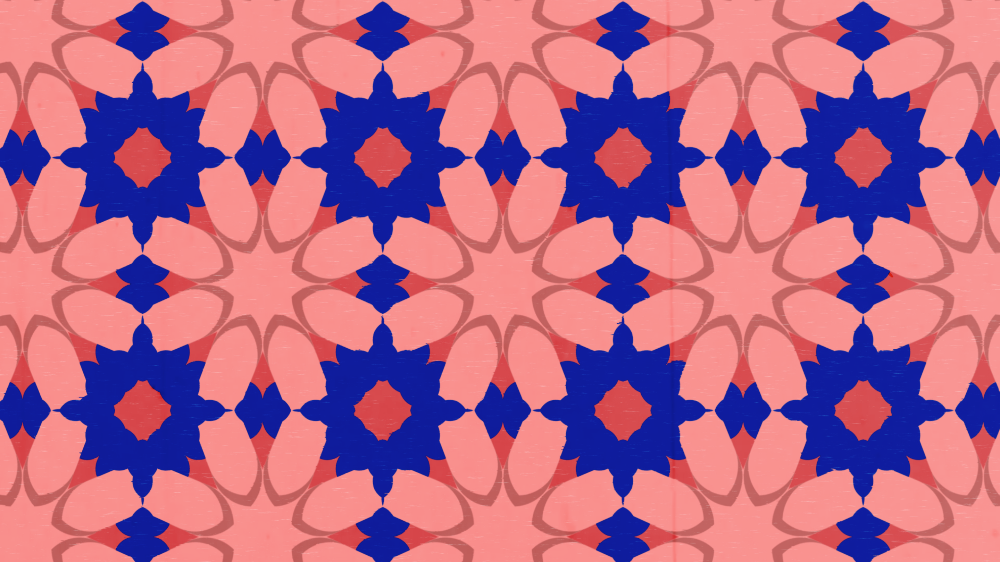
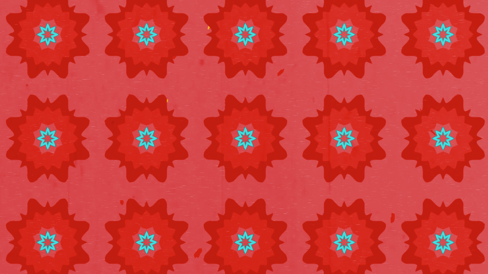
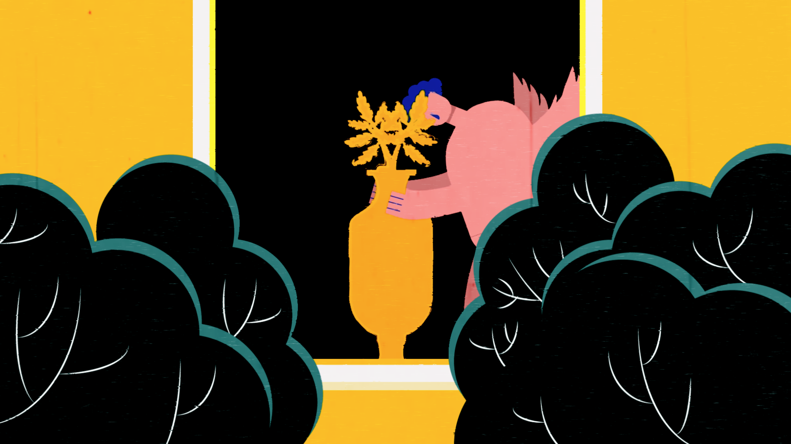
Working with the Wallace Collection Museum, I created the 30-second animation to tell the story of the object I picked from the museum. The object I picked was a French Rotating Dial Clock. The 18th-century clock is dominated by the bronze figure of Cupid. My story is inspired by the story of Cupid and Psyche. It tells a story of the love between Cupid and the clock.
VIDEO
STILL FRAMES
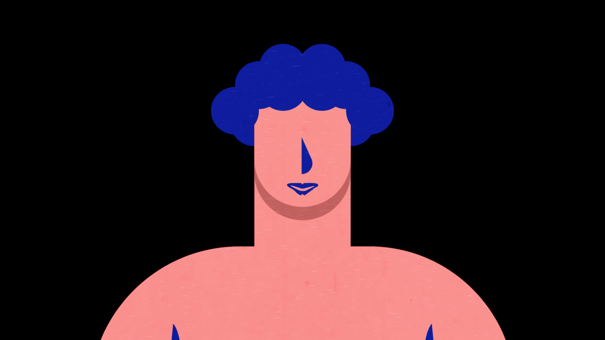
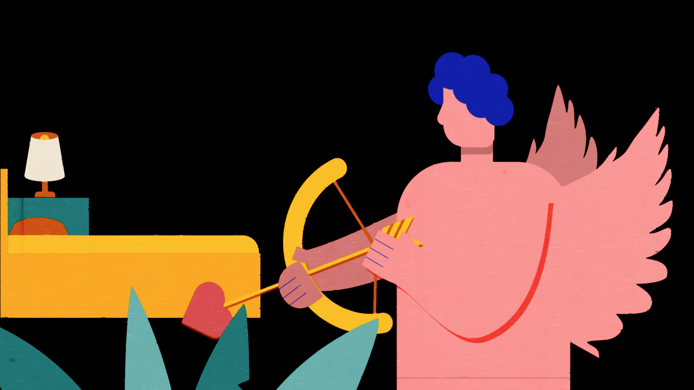
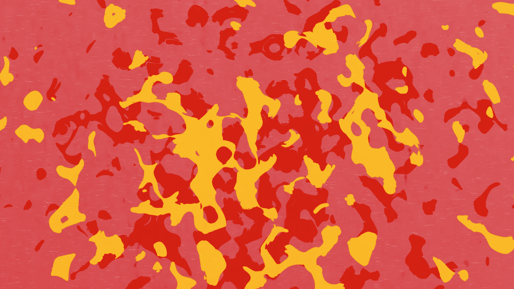
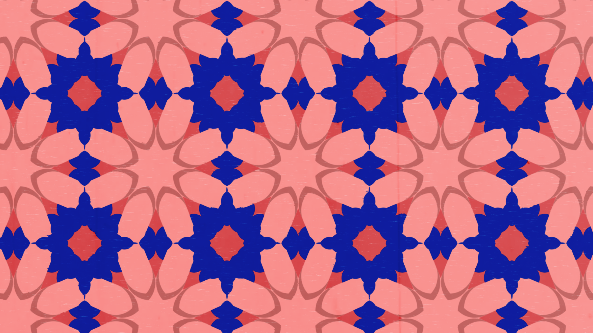
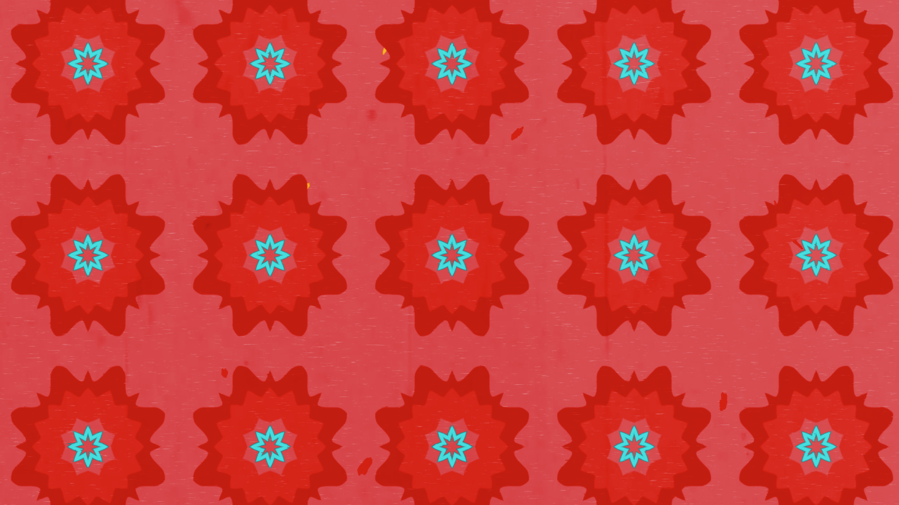
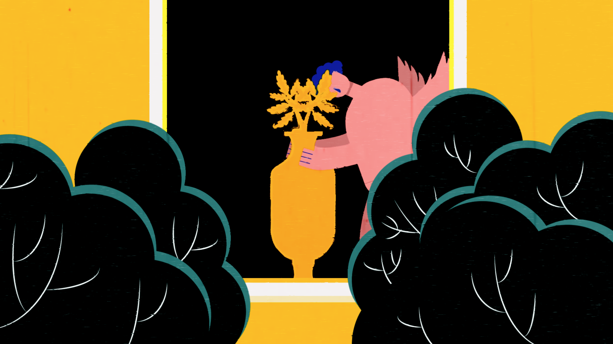